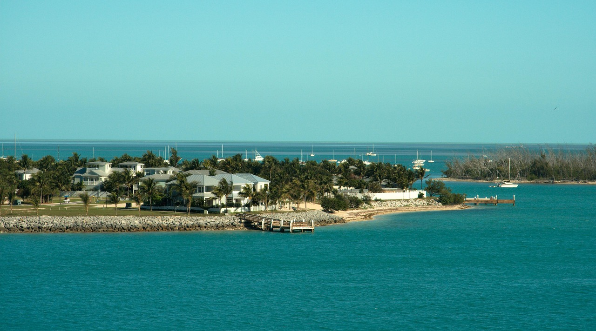

Our Headquarters in Key West
Our Mission
We first started in 2010 after the deepwater horizon exploded in the Gulf of Mexico. Protect the Reefs has since based itself in the Florida Keys. Our Objective from there on our was to protect our coral reefs through hands on restoration
Our Core Values
- Community: Working with local residents in protecting their enviroments
- Education: Raising awareness about the state of the Coral Reefs and how we can protect it
- Rejuvenation: Supporting ecosystems and bring new life
Our Accomplishments
Since our founding in 2012 we have accomplished the following:
3,000+ coral planted across numerous sites in the Florida Keys
120 trained reef restoration volunteers in partnership with local dive shops